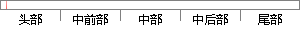

正如蚂蜂窝数据研究中心负责人所说：“互联网将让信息变得更加透明。
片段位置图

相似结果|
1
原句片段：正如蚂蜂窝数据研究中心负责人所说：“互联网将让信息变得更加透明。
相似片段 1：本期采访,蚂蜂窝旅行网联合创始人、CEO陈罡将为...有了大数据,有了分享,才让旅游变得更加个性化...大家对信息的获取更加透明,通过互联网能准确的...
相似片段 2：就是蚂蜂窝了.陈罡,作为蚂蜂窝的创始人之一,...社交网络让旅行这件事情变得越来越透明,大家都...正如陈罡所说,互联网填补了原来信息不对等,让...
|
※ 片段修改建议 ※
近似词参考：- 蚂蜂：马蜂
- 更加：加倍 越发 更为
系统自动生成语句：正如马蜂窝数据研究中心负责人所说：“互联网将让信息变得加倍透明。
注：本片段修改建议为系统自动生成，仅供参考。